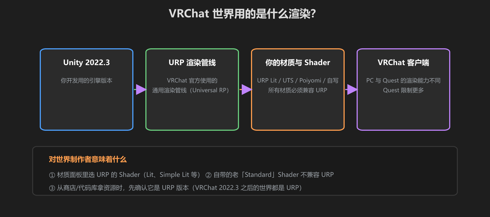
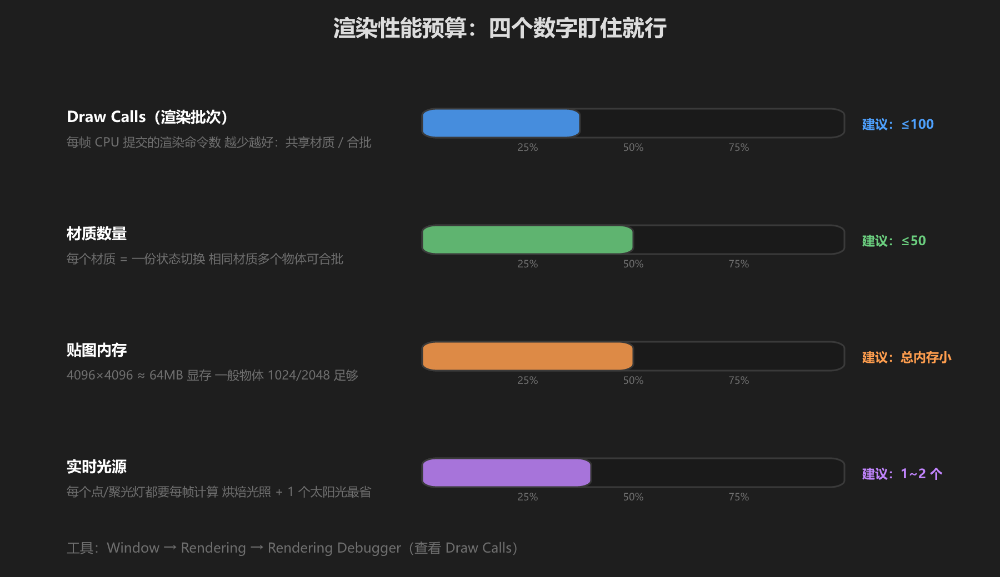
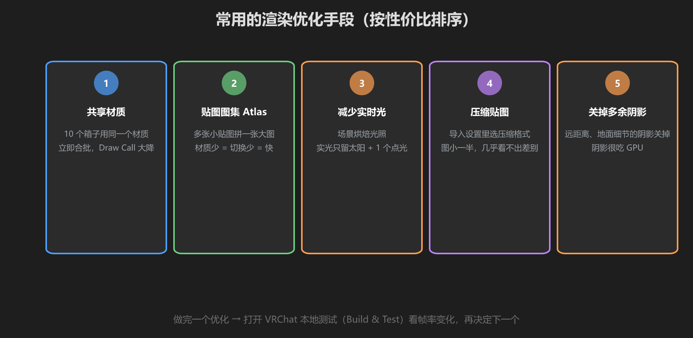

第 4 篇：VRChat 渲染实践 — URP、性能与优化
前几篇是通用知识，这一篇讲 VRChat 世界的特殊规则：用什么管线、能放多少东西、卡了怎么办。
1. VRChat 的技术栈

图：VRChat 世界 = Unity 2022.3 + URP 渲染管线 + 兼容 URP 的材质
VRChat 的 PC 版使用 URP（Universal Render Pipeline），Unity 版本 2022.3。这意味着：
- 所有材质必须使用 URP 的 Shader（Lit、Simple Lit、Unlit 等），老的 Built-in Standard 不行
- 你从商店/教程里下载的资源，要选 URP 版本，或自己转换材质
- Quest（安卓版）限制更多：部分 Shader 不支持、贴图更小、没有完整后处理。先做 PC 版，再考虑兼容
转换材质小技巧：从旧工程拿到一堆 Built-in 材质时，可以用 Window → Rendering → Rendering Converter，一键把材质转成 URP 版本（个别贴图可能要重新拖）。
2. 性能预算：四个数字
VRChat 世界没有官方的强制评级，但下面的经验值被公认为「大家都不卡」的红线：

图：Draw Call、材质数、贴图内存、实时光源 —— 盯住这四个就够了
| 指标 | 建议值 | 为什么 |
|---|---|---|
| Draw Call | 简单场景 < 100 | 每次提交 CPU 都要花时间，是帧率瓶颈大头 |
| 材质数量 | < 50 | 材质切换会打断合批，材质越多渲染越碎 |
| 贴图内存 | 总内存尽量小 | 4096×4096 一张就约 64MB 显存，几十张直接爆 |
| 实时光源 | 1~2 个 | 每个点/聚光灯都要对每物体算一遍光照 |
怎么查看？Unity 的 Game 窗口右上角 Stats 面板能看到 Draw Call / SetPass Call；VRChat SDK 上传时 Console 也会给出性能报告。
3. 优化手段（按性价比排序）

图：共享材质 → 图集 → 减少实时光 → 压缩贴图 → 关阴影
- 共享材质：100 个箱子用一个材质，Unity 能自动合批，Draw Call 立即大降。这是性价比最高的优化，先做它。
- 贴图图集（Atlas）：把多张小贴图拼成一张大图，多个物体共享一个材质。
- 减少实时光：静态场景全部烘焙，实光只留太阳 + 1 个点光源。
- 压缩贴图：导入设置里选压缩格式（如 ASTC），视觉几乎无差，内存减半。
- 关阴影：远处物体、地面小物件的阴影关掉。阴影非常吃 GPU。
优化的顺序很重要：先做第 1 条（共享材质），再看 Stats 面板决定下一步。别一开始就压贴图 —— 大多数世界的卡顿根源是 Draw Call，不是贴图。
4. 世界渲染设置清单
新世界建议这样设置（Settings → VRC World Settings 附近）：
| 设置项 | 建议 | 说明 |
|---|---|---|
| 天空盒 Skybox | 自定义 HDR 贴图 | 决定环境光和氛围，用 HDRI 天空 |
| 环境光 Ambient | 来自天空盒 | 默认即可，别关成黑色 |
| 阴影 | 软阴影 + 距离限制 | Shadow Distance 调小（如 30m） |
| 雾 Fog | 按风格开/关 | 能统一色调，也能隐藏性能短板 |
| 后处理 PostFX | URP Volume 里调 | 色彩分级、泛光等，性能有成本，适量用 |
学前检查清单
- 确认自己工程里材质都是 URP Shader
- 学会了看 Stats 面板的 Draw Call 数量
- 对场景做了一次「共享材质」优化并看到 Draw Call 下降
- 理解烘焙光照对 VRChat 世界的重要性